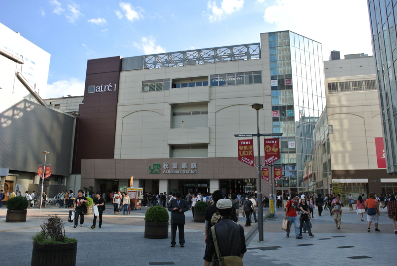
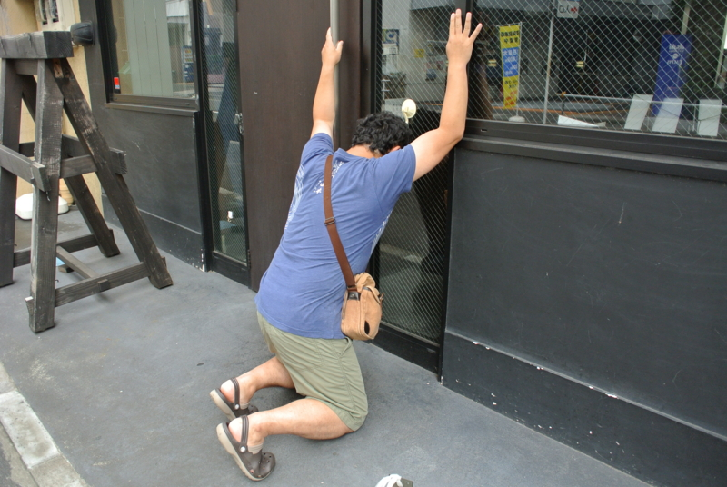
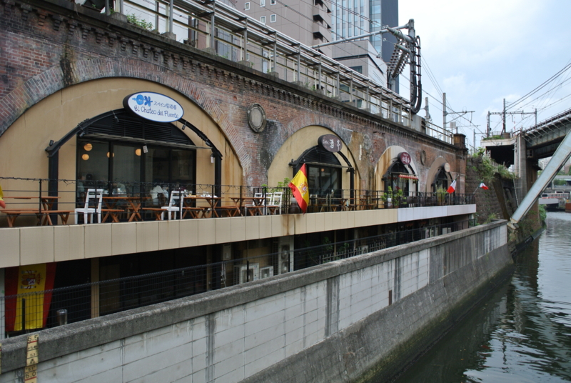
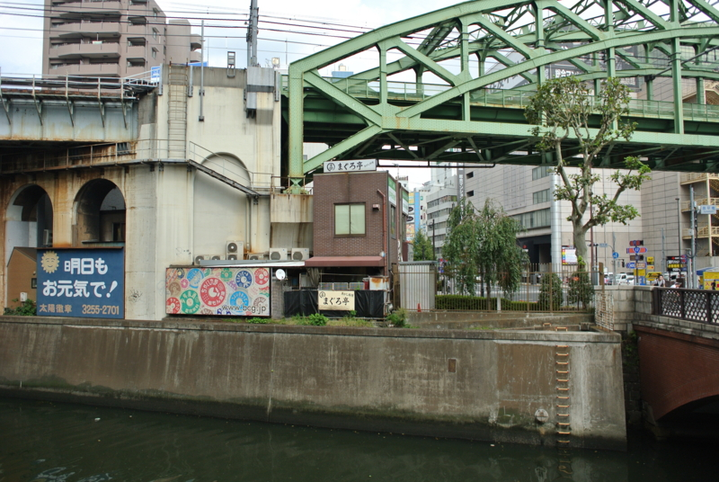
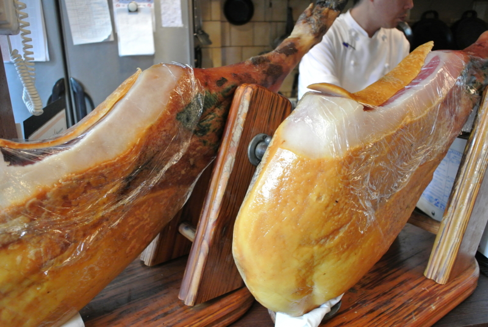
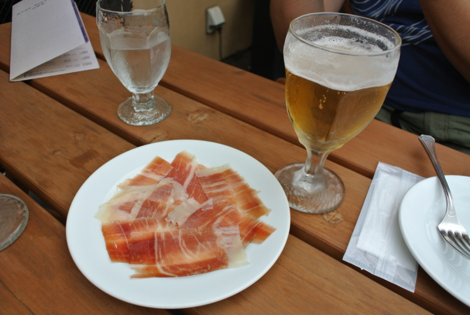
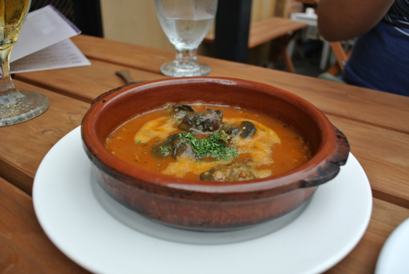
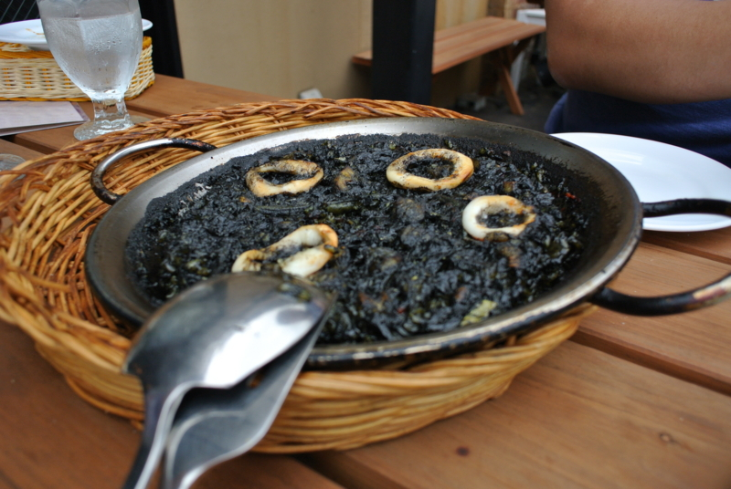
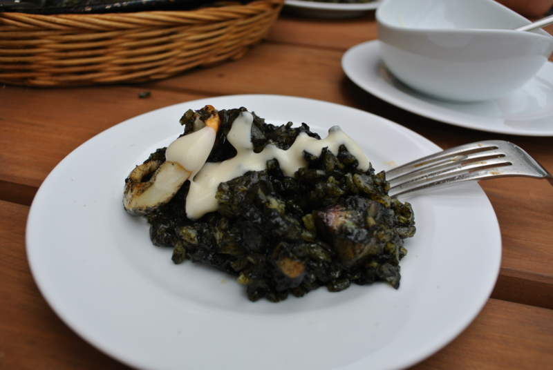

ブタのつもりがマグロの裏のイカ墨になった話。
公開日：

Y・Y氏と @subsfn とでアキバにメシを食いに行った。今回の目当ては
で紹介されていた「メガしびれ豚丼」だったのだけれど……

なんてこったい／(＾o＾)＼なぜか閉まってた。あとで調べてみたとこと、土曜日は4時かららしい。しょうがないので、泣き崩れる @subsfn を引きずって隣のスペイン居酒屋のランチを食べに行った。

テラスがあって、そとで食事が楽しめる。そばを流れる川はお世辞にも綺麗とはいいがたいけれど、秋空の下はやっぱり気持ちがいい。

対岸に目をやると、この前食べた（ガッツリ海鮮丼食べてきた。 - だるろぐ）海鮮どんぶり屋さん「まぐろ亭」が見える。なるほど、そういう位置関係か。この辺りは居酒屋が多いみたい。

気になったのは、店の入り口にデデーンとおいてあったイベリコ豚の生ハム（のようなもの）。豚丼を食べ逃した直後だし、これは食べておかねばなるまい。仕方ない。

生ハムを食べるのに、水を飲むわけにもいくまい。というわけで、仕方なく昼間っからビールをあける。ひたすら「やすみだなー……やすみだなー……」とつぶやきながら飲むY氏。きっとロクな平日を送っていないのだろう、実に南無い。
それにしても、ビールがおいしい。日頃はお酒を飲まない @subsfn ですら一口飲みたいと言い出すほど。明日も明後日も休みって、ほんと素晴らしいな。永遠にこんな休みだったらいいのに。

いろいろ食べたけど、印象に残ったのはエスカルゴの謎スープ。カタツムリってウマいものなのだな。スープもなかなかイケていたので、パンを頼んで浸して食べてしまった。

で、メインはイカ墨のパエリア。真っ黒。まっくろくろすけもビックリな黒さ。ちょっとこれはヤバい黒さだなぁ―と思っていたのだけれど……

スペインのマヨネーズ*1をつけて食べるとこれがおいしい。イカスミうんめ━━━━━━(ﾟ∀ﾟ)━━━━━━!!!!これだったらもう一皿イケた気もするけど、最近デブが気になるのでそこは止めておいた。
そのあとはアキバを少しブラブラし、疲れて眠くなったので解散。いつも通りグダグダだけど、あんまりそういうところ気を遣わなくてもいいのが楽だ。月末にはみんなでテルマエに浸かりに行く予定。
*1:なんかいろいろ混ぜてるみたいでサッパリめ？